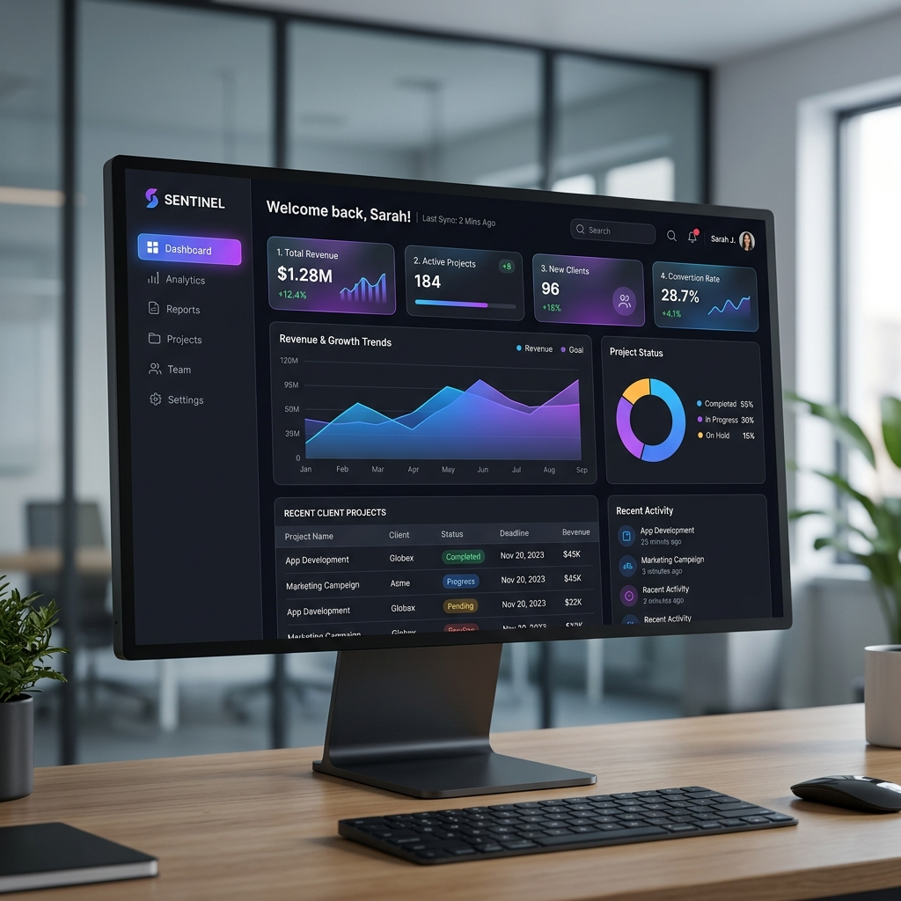
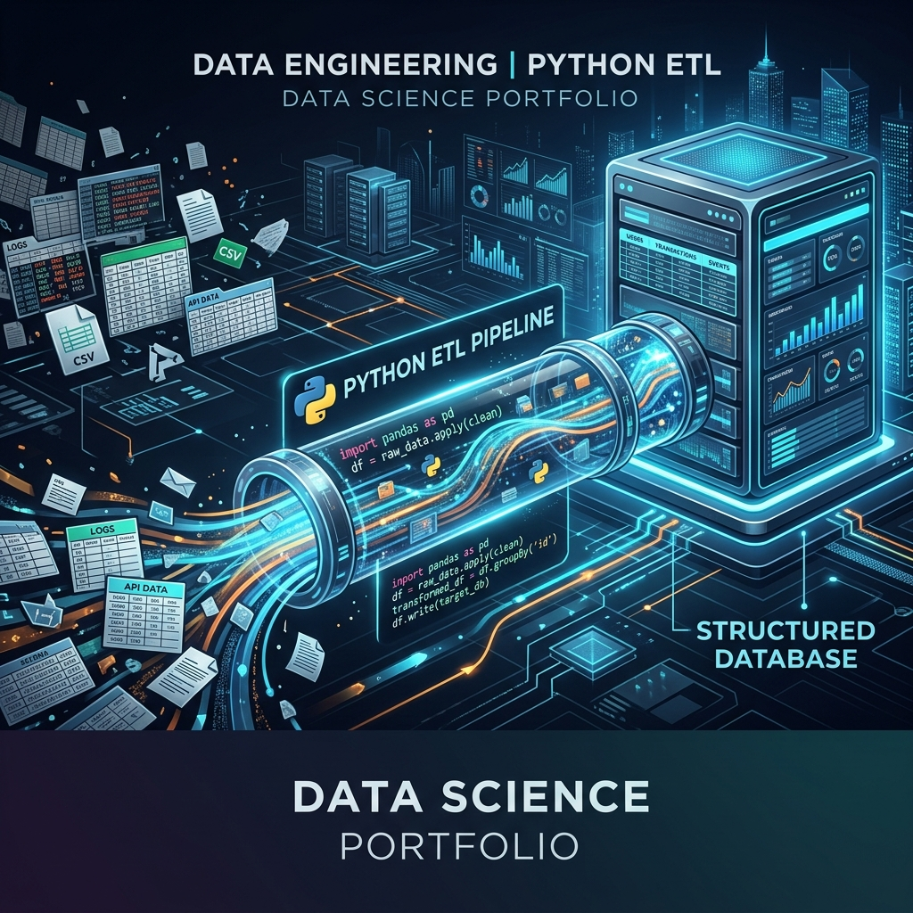

Real enterprise-scale automation projects driving business efficiency.

Led the architectural migration of standalone Python pipelines into a centralized, secure Streamlit web application, collaborating with developer assistance to deploy across a 7,000+ employee organization.
Following the success of my standalone Python ETL scripts, the organization required a way for non-technical HR specialists and regional managers to execute these data workflows autonomously. Running Python scripts from a command-line interface (CLI) and managing local file paths was not scalable across the department.
Operating as the Product Owner and Technical Architect, I authored a comprehensive Product Requirements Document (PRD V4.0) and collaborated with developer assistance to wrap the underlying Python engine in a secure, centralized web application.
io.BytesIO. Raw biometric logs and payroll PII are processed entirely in RAM and immediately downloaded by the user, leaving zero footprint on the hosting server.
Engineered standalone Python CLI scripts from scratch to sanitize 50MB+ biometric exports, resolve Odoo database sync crashes, and parse wide-grid timesheets for 7,000+ employees.
As the sole data specialist managing attendance and ERP integrations for over 7,000 construction employees across 50+ active sites, I encountered severe data infrastructure bottlenecks. Every month, raw biometric devices exported messy unformatted Excel logs, while departmental timekeepers submitted 30+ tab "wide-grid" timesheets that crashed Excel on standard laptops.
To eliminate hours of manual data entry and prevent recurring Odoo database transaction crashes during upload, I engineered a suite of standalone Python scripts to automate the entire data cleaning and transformation lifecycle.
openpyxl in read_only streaming mode. Consolidated consecutive daily leave codes into clean Start/End date ranges matching Odoo’s exact import schema.difflib and regex to standardize Arabic text variations, eliminating lookup failures.